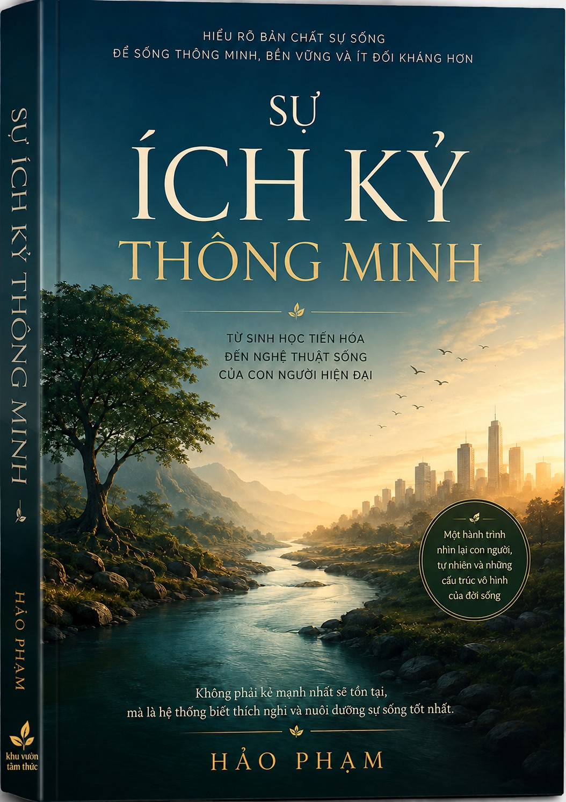

BỘ SÁCH VỀ NHẬN THỨC
... và nhiều cuốn khác

PHÍA SAU
BỨC TƯỜNG
Một hành trình làm mỏng
những bức tường vô hình của nhận thức
Đang mở sách…
◌ KHÔNG GIAN ĐỌC YÊN TĨNH
Giao diện tối giản giúp bạn tập trung vào nội dung và trải nghiệm đọc sâu.
▣ ĐỌC MỌI LÚC, MỌI NƠI
Tương thích trên điện thoại, máy tính bảng và máy tính.
♡ GHI CHÚ & ĐÁNH DẤU
Khung giao diện đã sẵn sàng để phát triển các tính năng đọc cá nhân.
♧ HÀNH TRÌNH NHẬN THỨC
Mỗi cuốn sách là một chặng đường. Gò Cao là nơi ta cùng nhau đi chậm và nhận ra.